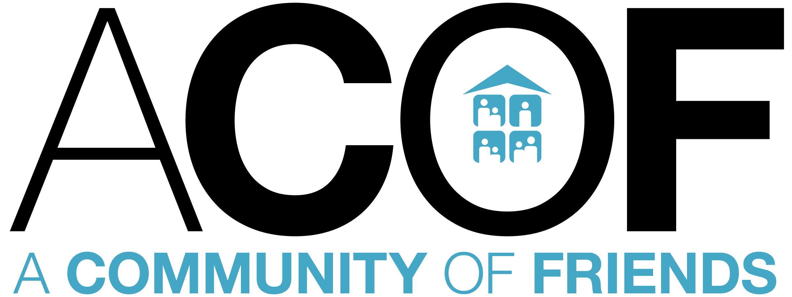
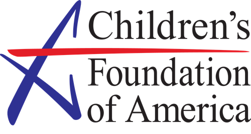

The Iris Initiative
Social issues such as homelessness, poverty, food hunger, and lack of educational opportunties often ostracize students from their local community, affecting their mental health as they feel alone and stressed.By providing them with enriching opportunities to understand their emotions and psychology at a young age, the students would be better equipped to overcome future challenges in life.
Our afterschool program will create a sense of community where students feel valued, understood and supported all the way. With all the activities we provide, the students will connect with others who are facing the same challenges and creating a sense of belonging in their communities. Our program also teaches critical skills needed to understand emotion, emotional regulation, and communication.
As a California registered non-profit program focused to provide early access to positive mental health habits to children who need it most, the Iris Initiative is partnered with A Community of Friends and sponsored by the Keirstein Foundation.

